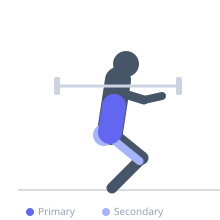
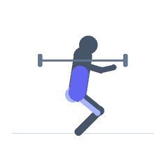

Exercise guide / Good Morning Squat Hybrid
Good Morning Squat Hybrid
The good morning squat hybrid begins in a squat stance but hinges the torso deeply forward during the descent (resembling a good morning), then drives back to upright by extending both the hips and knees together. It simultaneously loads the erector spinae, glutes, and hamstrings through a range of motion that blends both exercises, increasing total posterior chain recruitment and training spinal erector endurance under axial load.
Primary muscles
erector spinae
Secondary muscles
gluteus maximus
biceps femoris
Stabilizers
transverse abdominis
Equipment
No Equipment (Bodyweight)


Starting position
- Barbell in a high-bar back squat position. Feet shoulder-width apart, toes slightly out.
Setup
- Begin with a moderate load — this is a technique and endurance lift, not a max squat. Ensure the barbell is seated high on the traps.
Steps
- Step 1: Begin standing with barbell on the upper traps.
- Step 2: Simultaneously hinge the hips back and descend into a squat, allowing the torso to lean forward significantly.
- Step 3: At the bottom, the torso should be at 45 degrees or more of forward lean.
- Step 4: Drive up by extending hips and knees simultaneously, restoring upright torso.
- Step 5: Repeat.
Coaching cues
- Let the chest fall toward the thighs on the way down
- Drive the hips and chest up simultaneously on the way back
- Spine stays long — not round
Breathing
- Inhale and brace before descent. Exhale on the drive to the top.
Range of motion
- Full depth squat with significant forward torso lean to fully upright at the top.
Tempo
- 3-1-2-0
Common mistakes
- Rounding the lower back at the bottom — the erector spinae must maintain spinal extension
- Insufficient hip hinge — the torso should lean significantly more than a standard squat
Safety
- High demand on the spinal erectors — build up gradually and avoid with lower back injuries
- Do not use a load that compromises neutral spine maintenance at the bottom
Training
- strength: 5–8 reps
- strength: 3–4 sets
- Rest: {'strength': 150}